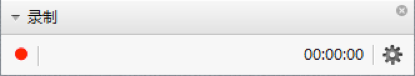
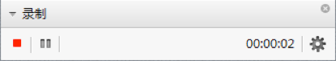

会议录制
在会议中，主持人可以录制会议、设置其他与会者录制会议的权限。
➢ 开始/暂停/停止录制
说明：
- 录制功能可以录制语音、共享的数据和视频。
- 录制媒体共享文件时，录制的文件中没有共享文件的声音。
- 无法录制开启了硬件加速窗口内的视频。
- 全屏录制1小时，录制文件大约有250MB。
- 录制会议过程中，不能发起语音通话。
1. 在工具栏中，单击  ，选择“录制”。在会议主界面的左下方，系统显示会议录制面板，如图所示。
，选择“录制”。在会议主界面的左下方，系统显示会议录制面板，如图所示。

2. 单击 ，选择录制内容。
，选择录制内容。
− 录制屏幕和声音：录制会议过程中的声音、当前屏幕的显示画面。保存的录制文件为“*.wmv”格式的视频文件。
− 录制声音：录制会议过程中的声音。保存的录制文件为“*.wma”格式的音频文件。
3. 可选: 如果您在会议中连接了两个显示屏，单击 ，选择录制内容。
，选择录制内容。
− 录制屏幕和声音：录制会议过程中的声音、主屏和副屏的显示画面。
− 录制主屏和声音：录制会议过程中的声音和主数据屏的显示画面。
− 录制声音：录制会议过程中的声音。
4. 单击，选择录制文件保存路径。
说明：
- 在保存文件时，存储空间必须大于等于30MB。
- 在保存文件时，如果您没有选择保存路径，则系统将文件保存在默认的路径下。
5. 单击“保存”。系统开始录制会议，录制区显示录制状态，如图所示。
录制状态

录制区中按钮的功能如下：
：暂停录制。
：恢复录制。
：停止录制。
6. 单击 ，停止录制。
说明：
- 停止录制后，在弹出的对话框中可以查看录制文件的保存路径和录制时长，您可以选择“打开文件夹”或“关闭”。
- 如果在录制过程中会议结束，则录制的文件会被保存在指定路径中，会议的结束时间是录制的截止时间。
➢ 查看录制文件
打开保存路径下的录制文件，可以查看录制内容。
➢ 赋予录制权限
在会议中主持人可以赋予其他与会者录制会议的权限。请参见设置与会者权限。